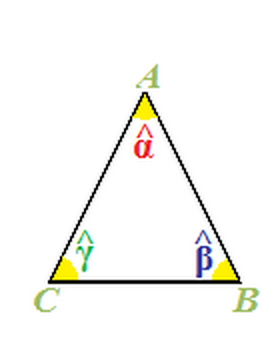
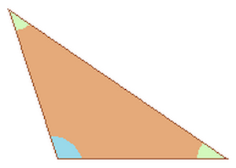
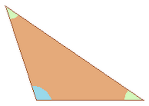
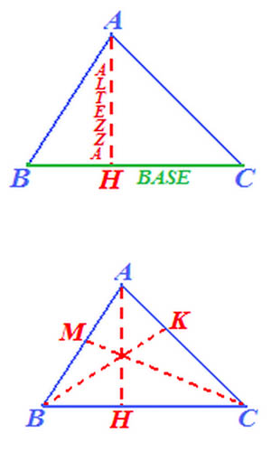
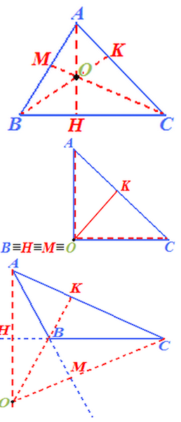
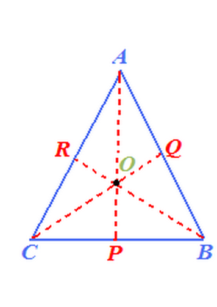
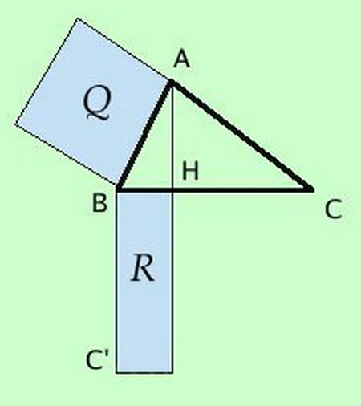
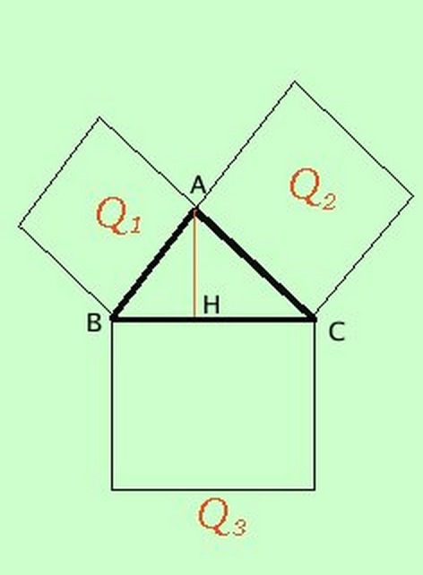
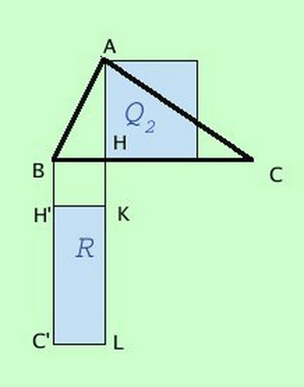

Triangolo
- ....
Antonio Pierro @antonio_pierro_
Per consigli, suggerimenti, eventuali errori o altro potete scrivere una email a antonio.pierro[at]gmail.com
Trinagolo

- Il TRIANGOLO è un POLIGONO che ha TRE LATI e TRE ANGOLI
- Un LATO e un ANGOLO del triangolo si dicono OPPOSTI se il VERTICE dell'angolo NON APPARTIENE AL LATO CONSIDERATO
- L'angolo \(\alpha\) è OPPOSTO al lato CB;
- Il lato AB è ADIACENTE agli angoli \(\alpha\) e \(\beta\);
Caratteristiche dei triangoli
- OGNI LATO è sempre MINORE della SOMMA DEGLI ALTRI DUE.
- OGNI LATO è sempre MAGGIORE della DIFFERENZA DEGLI ALTRI DUE.
- La SOMMA degli ANGOLI INTERNI del TRIANGOLO misura 180°
Classificazione dei triangoli 1/2
- Il triangolo con tutti e TRE LATI CONGRUENTI, cioè aventi la stessa lunghezza, si dice EQUILATERO. (Ampiezza di un angolo del triangolo equilatero = 180° : 3 = 60°)
- Il triangolo con DUE LATI CONGRUENTI, cioè aventi la stessa lunghezza, si dice ISOSCELE.
- Il triangolo che ha TRE LATI DISUGUALI, cioè aventi tutti diversa lunghezza, si dice SCALENO.
Classificazione dei triangoli 2/2
- Secondo gli ANGOLI i TRIANGOLI possono essere classificati in:
- Il triangolo che ha un ANGOLO RETTO si dice TRIANGOLO RETTANGOLO.
- Il triangolo con tutti e TRE gli ANGOLI ACUTI si dice TRIANGOLO ACUTANGOLO.
- Il triangolo che ha un ANGOLO OTTUSO si dice TRIANGOLO OTTUSANGOLO.
 

Elementi notevoli di un triangolo
- Gli ELEMENTI NOTEVOLI di un triangolo sono:
- Altezze (Ortocentro)
- Mediane (Baricentro)
- Bisettrici (Incentro)
- Assi (Circocentro)
Altezze di un triangolo

- Disegniamo il segmento AH che parte dal vertice A e interseca, perpendicolarmente, il lato opposto BC
- Il segmento AH si dice ALTEZZA del triangolo relativa al lato BC.
- Il punto H si chiama PIEDE dell'ALTEZZA.
- Mentre il lato BC è la BASE del triangolo.
- l'ALTEZZA di un triangolo rispetto ad un suo lato, che in questo caso prende il nome di BASE, è la DISTANZA di questo LATO dal VERTICE OPPOSTO.
- Poiché il triangolo ha TRE LATI, ognuno di essi può essere considerato come BASE del triangolo.
Mediana
- Disegniamo un qualsiasi triangolo ABC.
- Chimaiamo P il PUNTO MEDIO del lato BC.
- Congiungiamo il vertice A con il punto medio P del lato opposto.
- Quella che abbiamo disegnato prende il nome di MEDIANA e più esattamente essa è la MEDIANA del triangolo ABC relativa al lato BC.
- La MEDIANA di un triangolo è il SEGMENTO che UNISCE un VERTICE al PUNTO MEDIO DEL LATO OPPOSTO.
Bisettrice del vertice di un triangolo
- Disegniamo il triangolo ABC
- Disegniamo un segmento che partendo dell'angolo A raggiunga il lato opposto BC, dividendo l'angolo A in due parti aventi la stessa ampiezza
- Il segmento AH disegnato prende il nome di BISETTRICE di VERTICE A del triangolo.
ASSI dei LATI di un TRIANGOLO
- Disegniamo un qualsiasi triangolo ABC
- Ora disegniamo il punto medio del lato BC e lo chiamiamo P
- Ora disegniamo la RETTA p (minuscolo) PERPENDICOLARE a BC e PASSANTE per il PUNTO P
- La RETTA p disegnata si chiama ASSE del LATO BC.
- L'ASSE di un TRIANGOLO relativo ad un lato è la RETTA ad ESSO PERPENDICOLARE passante per il PUNTO MEDIO del lato considerato.
Punti notevoli di un triangolo
- I PUNTI NOTEVOLI di un triangolo sono:
- l'ORTOCENTRO;
- il BARICENTRO;
- l'INCENTRO;
- il CIRCOCENTRO.
Ortocentro di un triangolo

- l'ORTOCENTRO è il PUNTO in cui si INCONTRANO le ALTEZZE di un triangolo.
- Se il triangolo è ACUTANGOLO l'ORTOCENTRO è INTERNO al triangolo
- Se il TRIANGOLO è RETTANGOLO l'ORTOCENTRO COINCIDE con il VERTICE DELL'ANGOLO RETTO.
- Se il TRIANGOLO è OTTUSANGOLO l'ORTOCENTRO è ESTERNO al triangolo.
Baricentro di un triangolo

- Poiché il triangolo ha tre lati e tre angoli, possiamo costruire tre mediane per ogni triangolo.
- Ognuna di esse unisce un vertice con il punto medio del lato opposto.
- Le tre mediane passano tutte per uno stesso punto detto BARICENTRO che nell'immagine è indicato con la lettera O.
- La parola BARICENTRO significa "centro del peso", in altre parole esso è l'unico punto di equilibrio di un triangolo.
Incentro
- Disegniamo le bisettrici dei triangoli relativi ai vertici A, B e C
- Le TRE BISETTRICI si INCONTRANO in un punto detto INCENTRO che nel disegno è evidenziato con la lettera O
- Per qualsiasi triangolo l'INCENTRO è INTERNO al triangolo.
Circocentro del triangolo
- disegniamo il punto medio del lato AB (R) e il punto medio del lato AC (Q)
- disegniamo, rispettivamente, la retta perpendicolare ad AB passante per R che chiamiamo r e la retta perpendicolare ad AC passante per Q che chiamiamo q
- Gli assi del triangolo passano tutti per UNO STESSO PUNTO chiamiamato CIRCOCENTRO DEL TRIANGOLO e che è indicato con la lettera O
Primo teorema di Euclide

- In ogni triangolo rettangolo il quadrato costruito su un cateto è equivalente ad un rettangolo avente per lati l'ipotenusa e la proiezione del cateto sull'ipotenusa. \[ \overline{AB}^{2} = \overline{BH} * \overline{BC} \]
Teorema di Pitagora

- In ogni triangolo rettangolo la somma dei quadrati costruiti sui cateti è equivalente al quadrato costruito sull'ipotenusa \[ \overline{AB}^{2} + \overline{AC}^{2} = \overline{BC}^{2} \]
Secondo teorema di Euclide

- In ogni triangolo rettangolo il quadrato costruito sull'altezza relativa all'ipotenusa è equivalente al rettangolo che ha per lati le proiezioni dei cateti sull'ipotenusa. \[ \overline{AH}^{2} = \overline{BH} * \overline{HC} \]